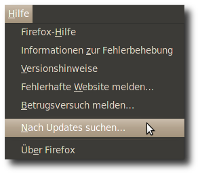

Portable Firefox
Dieser Artikel wurde für die folgenden Ubuntu-Versionen getestet:
Ubuntu 16.04 Xenial Xerus
Ubuntu 14.04 Trusty Tahr
Zum Verständnis dieses Artikels sind folgende Seiten hilfreich:
Mit einem portablen Firefox hat man die Möglichkeit, Firefox-Profile, neue Firefox-Versionen oder Erweiterungen gefahrlos auszuprobieren. Tester und Entwickler schätzen die Möglichkeit, eine zweite Firefox-Instanz auf dem eigenen Computer nutzen zu können, ohne das Risiko die eigentliche Firefox-Version (und deren Profil) zu kompromittieren.
Ein weiterer komfortabler Nebeneffekt ist, dass man sich den portablen Firefox – der Name verrät es bereits – auch auf einen USB-Stick kopieren kann und so seinen eigenen auf PC und Notebook genutzten Firefox mit allen Erweiterungen (Add-ons) und Lesezeichen immer dabei hat. Natürlich kann man diese Version auch als Backup der eigentlichen Firefox-Installation nutzen.
Hinweis:
Es wird in diesem Artikel vorausgesetzt, dass man sich im Homeverzeichnis befindet und dort einen neuen Ordner anlegt (firefox-portable), der dann für den zweiten (portablen) Firefox benutzt wird. Natürlich muss der Ordner nicht im Homeverzeichnis liegen oder wie vorgeschlagen heißen; dann jedoch muss dies vom Anwender angepasst werden.
Vorbereitung¶
Man legt sich zuerst einen neuen Ordner (z. B. firefox-portable) an. Dies kann im Homeverzeichnis oder einem beliebigen anderen Verzeichnis erfolgen (gegebenenfalls Rechte beachten). Auch ein USB-Stick kann dazu benutzt werden; dieser muss dazu vorher eingebunden werden.
In diesem neuen Ordner legt man einen Unterordner profilordner an.
Hinweis!
Fremdsoftware kann das System gefährden.
Als nächstes lädt man sich von der Mozilla-Seite  die gewünschte Firefoxversion im Format tar.bz2 herunter. Wichtig ist hierbei, dass es sich um die Linuxversion des Firefox handelt (linux-i686 oder, bei 64-bit Systemen, linux-x86_64). Informationen und Downloads zu anderen Versionen des Firefox sind unter Links zu finden.
die gewünschte Firefoxversion im Format tar.bz2 herunter. Wichtig ist hierbei, dass es sich um die Linuxversion des Firefox handelt (linux-i686 oder, bei 64-bit Systemen, linux-x86_64). Informationen und Downloads zu anderen Versionen des Firefox sind unter Links zu finden.
Man entpackt [1] nun das heruntergeladene Archiv in den zuvor erstellten Ordner (in diesem Beispiel ~/firefox-portable) um den Ordner firefox zu erhalten.
Anschließend öffnet man seinen bevorzugten Texteditor[5] und fügt die folgenden zwei Zeilen in ein neues Dokument ein:
1 2 | #!/bin/sh "$PWD/firefox/firefox" -no-remote -profile "$PWD/profilordner" |
Dieses speichert man nun unter dem Namen loader.sh im Verzeichnis ~/firefox-portable ab.
Zuletzt macht man diese Datei ausführbar. Am einfachsten geht das in einem Dateimanager mit  "Eigenschaften -> Zugriffsrechte (bzw. Berechtigungen)" oder über das Terminal mit dem chmod-Befehl:
"Eigenschaften -> Zugriffsrechte (bzw. Berechtigungen)" oder über das Terminal mit dem chmod-Befehl:
chmod +x ~/firefox-portable/loader.sh
Im Ordner ~/firefox-portable sollten sich jetzt drei Elemente befinden: Die Ordner firefox und profilordner sowie die Datei loader.sh. Weitere Informationen dazu unter dem Punkt Wissenswertes.
Achtung!
Man sollte sich spätestens an dieser Stelle davon überzeugen, dass man von seinem Firefox-Profilordner eine Sicherungskopie (Backup) gemacht hat.
Portable Firefox nutzen¶
Um den portablen Firefox zu starten führt man das Skript loader.sh aus. Das kann graphisch über den Dateimanager, über das Terminal oder über einen Programmstarter passieren.
Achtung!
Nicht direkt ~/firefox-portable/firefox/firefox ausführen!
Im Dateimanager genügt ein Doppelklick auf die Datei loader.sh um diese auzuführen.
Im Terminal[3] gibt man zum Ausführen des Start-Skriptes folgenden Befehl ein:
sh ~/firefox-portable/loader.sh
Zur Erstellung eines Programmstarters, siehe den Abschnitt Starter anlegen.
Portable Nutzung¶
Der Ordner ~/firefox-portable kann man beliebig verschieben (etwa auf einen USB-Stick) ohne seine Profildaten zu verlieren. (Natürlich muss beim Start über das Terminal der Pfad entsprechend angepasst werden.)
Eigenen Profilordner nutzen¶
Möchte man den portablen Firefox nicht nur ausprobieren, sondern auch richtig nutzen, möchte man dazu eventuell sein eigenes Profil verwenden. Dies kann man sehr leicht bewerkstelligen, indem man den Inhalt des Profilordners (normalerweise .mozilla/firefox/xxxxxxxx.default) im Homeverzeichnis in den Profilordner des portablen Firefox kopiert.
Alternativ kann man auf den folgenden Seiten Informationen dazu erhalten:
Mehrere Profile nutzen¶
Für jedes weitere Profil benötigt man neben einem Profilordner auch ein separates Start-Skript, das auf den entsprechenden Ordner verweist. Zum Beispiel könnte man einen Ordner profilordner2 und ein Skript loader2.sh mit dem Inhalt:
1 2 | #!/bin/sh "$PWD/firefox/firefox" -no-remote -profile "$PWD/profilordner2" |
erstellen.
Achtung!
Es ist nicht zu empfehlen im obigem Shellskript auch auf ein normales (nicht portables) Profil im Profilordners zu verweisen. Dies kann leicht zu Kompatibilitätsproblemen mit dem regulär installierten Firefox führen.
Einschränkungen¶
Man sollte sich darüber im Klaren sein, dass man auf dem hier beschriebenen Weg einen voll funktionstüchtigen Browser erhält, dieser aber in einigen Punkten grundlegend vom systemeigenen Firefox abweicht.

Updates¶
Der portable Firefox lässt sich wie ein „normaler“ Firefox einsetzen und handhaben. Beachten muss man allerdings, dass er nicht wie der systemeigene Firefox über die Paketquellen mit Updates versorgt wird, sondern über "Hilfe -> Nach Updates suchen" im Firefox-Menü (siehe auch Autoupdate  ).
).
Systemintegration¶
Da der neue Browser nicht installiert, sondern nur aufgerufen wird, ist er nicht in das System integriert. Das bedeutet zum Beispiel, dass er nicht als Programmstarter im Menü oder Launcher zu finden ist und auch keinen Zugriff auf systemeigene Funktionen wie globale Menüs und Benachrichtigungen hat. Wie man zumindest einen Programmstarter erstellt, wird im Abschnitt Starter anlegen beschrieben.
Systemintegration (optional)¶
Anwender, die den portablen Firefox nicht zum Mitnehmen, sondern beispielsweise zum Testen neuer Firefox-Versionen und Ausprobieren neuer oder zusätzlicher Erweiterungen verwenden möchten, können sich diesen „stationär“ (→ komfortablere Handhabung) einrichten.
Hinweis:
Die in diesem Abschnitt beschriebenen Änderungen bauen darauf, dass sich der Pfad des portablen Firefox nicht ändert.
Starter anlegen¶
Um einen Starter anzulegen[4], öffnet man seinen bevorzugten Texteditor[5] und fügt die folgenden Zeilen in ein neues Dokument ein:
1 2 3 4 5 6 | [Desktop Entry] Name=Portable Firefox Exec="/home/USERNAME/firefox-portable/firefox/firefox" -no-remote -profile "/home/USERNAME/firefox-portable/profilordner" Icon=/home/USERNAME/firefox-portable/firefox/browser/icons/mozicon128.png Terminal=false Type=Application |
Dabei ersetzt man "USERNAME" durch seinen Benutzernamen und passt gegebenenfalls den Pfad nach Icon= an, da sich der Speicherort der Icons je nach Firefox-Version unterscheidet.
Dieses Dokument speichert man mit der Endung .desktop (also etwa unter dem Namen fx-portable.desktop) in einem (oder mehreren) der folgenden Ordner ab:
~/Schreibtisch um einen Starter auf der Arbeitsfläche zu erhalten.
2. ~/.local/share/applications um einen Eintrag in Menü oder Launcher zu für den aktuellen Benutzer zu erhalten. 3. /usr/share/applications um einen Eintrag in Menü oder Launcher zu für alle Benutzer zu erhalten (Zugriff auf den firefox-portable-Ordner vorausgesetzt).
In den beiden letzten Fällen muss man sich meist einmal aus- und wieder einloggen, um den Starter zu sehen.
Alternatives Logo vergeben¶
Möchte man für seinen Starter ein alternatives Logo verwenden, so kann man sich etwa hier  das rechts gezeigte Logo herunterladen, im firefox-portable-Ordner abspeichern und den Pfad nach
das rechts gezeigte Logo herunterladen, im firefox-portable-Ordner abspeichern und den Pfad nach Icon= im obigen Starter entsprechend anpassen. Das Logo zeigt eine stilisierte Bombe und soll auf die Gefährlichkeit der jeweiligen Firefox-Entwicklungsversion hinweisen (siehe Minefield, deutsch: Minenfeld). Allerdings eignet es sich auch sehr gut, um deutlich zu machen, dass man nicht den „normalen“ Firefox startet.
{kind=link}
Globale Verknüpfung anlegen¶
Um den portablen Firefox systemweit mit einem einfachen Befehl starten zu können, passt man zunächst das Skript loader.sh wie folgt an:
1 2 3 | #!/bin/sh cd $(dirname $(readlink -f "$0")) "$PWD/firefox/firefox" -no-remote -profile "$PWD/profilordner" |
Dann erstellt man mittels ln eine symbolische Verknüpfung im Ordner /usr/local/bin durch folgenden Befehl im Terminal:
sudo ln -s ~/firefox-portable/loader.sh /usr/local/bin/fx-portable
Nun kann der portable Firefox systemweit über den Befehl fx-portable gestartet werden (Zugriff auf den firefox-portable-Ordner vorausgesetzt).
Wissenswertes¶
Nachfolgend einige Hintergrundinformationen zum Skript und den beiden Ordnern.
Enthaltene Dateien¶
In dem Ordner firefox-portable im Homeverzeichnis befinden sich zwei Ordner und eine Datei:
| Enthaltene Dateien im Ordner firefox-portable | ||
| Name | Eigenschaft | Funktion |
| loader.sh | Datei (Skript) | Shellskript, das den portablen Firefox startet |
| firefox | Ordner | die von Mozilla heruntergeladene Firefoxversion |
| profilordner | Ordner | In diesem Ordner sucht Firefox nach Profildateien. Falls keine gefunden werden, legt Firefox dort ein neues Profil an. |
Das Shellskript¶
Das Shellskript loader.sh enthält folgenden Zweizeiler:
1 2 | #!/bin/sh "$PWD/firefox/firefox" -no-remote -profile "$PWD/profilordner" |
Es wird im Skript der Befehl pwd benutzt, der den Namen des gerade verwendeten Verzeichnisses ausgibt. Weitere Informationen im Artikel pwd.
Der eigentliche Befehl¶
Das eigentliche Befehl im Skript gibt an, welche Firefox-Datei und welches Firefox-Profil geladen werden soll:
"pfad_zum_portable_fox/firefox" -no-remote -profile "pfad_zum_portable_fox/profilordner"
Dieser kann den jeweiligen Bedürfnissen angepasst werden [5] und besteht aus vier Teilen:
| Befehl des Skriptes | ||
| Name | Eigenschaft | Funktion |
"pfad_zum_portable_fox/firefox" | Befehl | Startet das Shellskript firefox im Portable-Ordner firefox |
-no-remote | Option | Nutzung des neu erstellten (portablen) Firefox parallel zur eigentlichen Firefox-Instanz. Ermöglicht wird dies durch den Befehl -no-remote (teilweise auch als export MOZ_NO_REMOTE=1 bekannt). Siehe Abschnitt Links. |
-profile | Option | Diese gibt an, dass das Profil im nachfolgenden Pfad geladen werden soll (im Gegensatz zu -P wird hierbei bewusst der Profilmanager umgangen) |
"pfad_zum_portable_fox/profilordner" | Pfad | Zeigt den Ort des (portablen) Profilordners an |
Das modizierte Skript¶
Im Abschnitt Globale Verknüpfung anlegen wurde in das Start-Skript die folgende Zeile eingefügt:
1 | cd $(dirname $(readlink -f "$0")) |
Diese ist notwendig, da sich $PWD auf den aktuellen Pfad bezieht, welcher beim Aufruf über eine Verknüpfung nicht korrekt ist.
Die Konstruktion $() bewirkt eine Auswertung des eingeklammerten Ausdrucks und gibt dessen Ausgabe zurück. Die Codezeile enthält also drei verschachtelte Befehle, die von innen nach außen wie folgt aufgelöst werden:
| Befehl zur Pfad-Korrektur | ||
| Name | Eigenschaft | Funktion |
"$0" | Variable | enthält den Pfad der aufgerufenen Datei (in diesem Fall /usr/local/bin/fx-portable) |
readlink | Befehl | löst Verlinkungen auf und gibt den eigentlichen Pfad aus (in diesem Fall /home/USERNAME/firefox-portable/loader.sh) |
-f | Option | löst beliebig viele Verlinkungen auf |
dirname | Befehl | extrahiert aus einem Dateipfad den enthaltenden Ordner (in diesem Fall /home/USERNAME/firefox-portable/) |
cd | Befehl | Wechselt zum nachfolgend angegebenen Verzeichnis (in diesem Fall /home/USERNAME/firefox-portable/) |
Gegenüber der einfacheren Variante:
1 | cd /home/USERNAME/firefox-portable/
|
hat die obige den Vorteil, dass sie "portabel" bleibt, also das Start-Skript weiterhin funktioniert, wenn man den firefox-portable-Ordner verschiebt.
Links¶
Firefox
 Übersichtsartikel
ÜbersichtsartikelMozilla Enterprise Mozilla in einer Enterprise-Umgebung benutzen - ESR-Version
mozillaZine-Knowledge Base: -no-remote und Profile
Caschys Blog: Artikel zu Firefox Portable und diesem Wikiartikel
- Erstellt mit Inyoka
-
 2004 – 2017 ubuntuusers.de • Einige Rechte vorbehalten
2004 – 2017 ubuntuusers.de • Einige Rechte vorbehalten
Lizenz • Kontakt • Datenschutz • Impressum • Serverstatus -
Serverhousing gespendet von